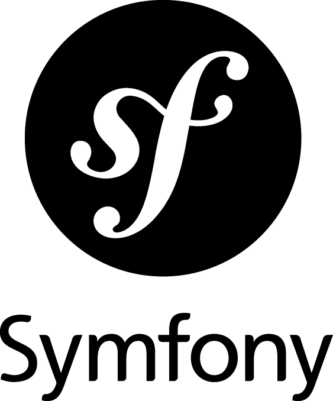
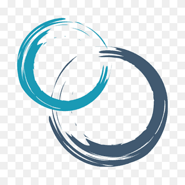

Compétences
Professionnelles

HTML / CSS

Angular

Ionic

GIT

MongoDB

Symfony

Méthode agile SCRUM
Bon niveau :


Niveau moyen :


Personnelle
Adaptablilité
Travail en équipe
Volontaire
Sérieux
Créativité
Force de proposition